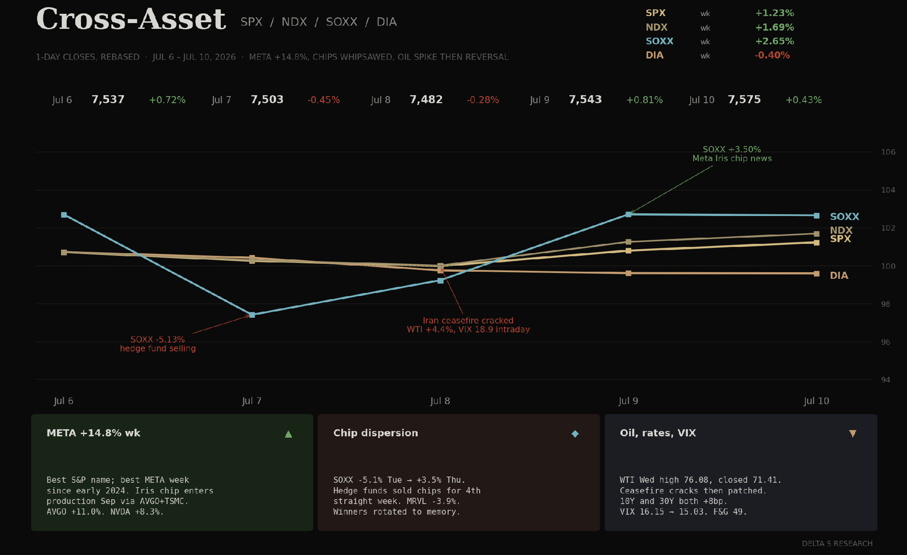
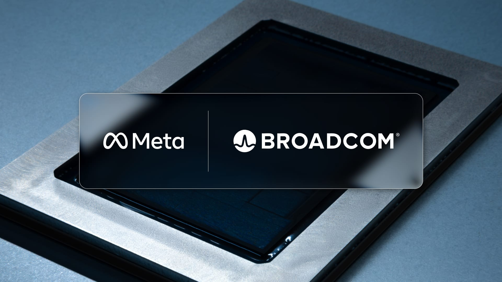
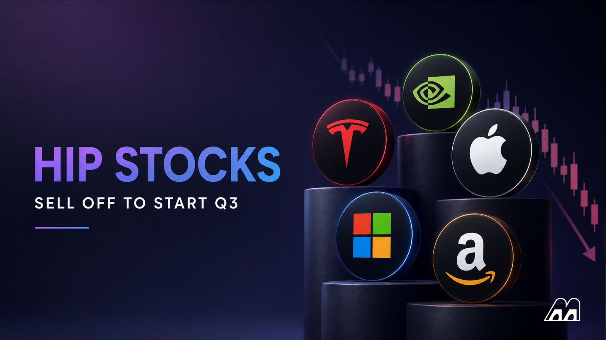
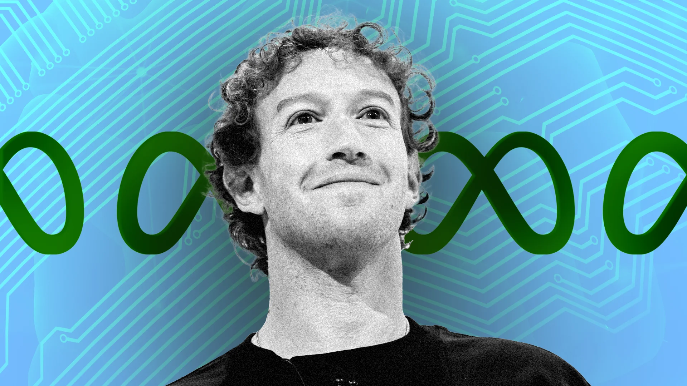

- A winning week on thin leadership. SPX +1.23% to 7,575.39. NDX +1.69%. SOXX +2.65% but only after a Tuesday minus 5.13% air-pocket and a Thursday +3.50% reversal. DIA minus 0.40%. Five of eleven S&P sectors closed higher (Energy +3.5%, Tech +2.9% led; Materials minus 2.1% weakest). Sixty-nine S&P names printed new 52-week highs, thirty-nine of them financials, telegraphing the July 15 JPM earnings setup.
- META was the entire tape. +14.80% WoW to 669.21, best S&P name and its best week since early 2024. Three catalysts stacked: Muse Image AI Tuesday, Muse Spark 1.1 Thursday, and the Reuters print Friday that META’s custom "Iris" MTIA chip enters production in September via a Broadcom-TSMC partnership. AVGO piggybacked +10.96%. NVDA +8.28%. AMD +7.74%. The narrative flipped from "hyperscalers rent GPUs" to "hyperscalers own their silicon stack."
- Chip dispersion, fourth consecutive week of hedge fund selling. Reuters flagged HFs net-selling semis for a fourth straight week. SOXX printed minus 5.13% Tuesday, then reversed +3.50% Thursday on the META-Iris headline. Winners rotated inside the sub-industry: HPE, ANET, memory names (STX) caught the rotation flow. Losers: MRVL minus 3.87%, MSFT minus 1.38%, GOOGL minus 0.76%. Two AI-adjacent names in the mega-cap sleeve did not participate at all.
- Iran ceasefire cracked Tuesday night, patched by Thursday. Trump declared the ceasefire "over" July 8. US struck Iran. WTI ripped intraday to 76.08 Wednesday, closed 73.52 (+4.36% day). VIX spiked to 18.91 intraday same session. By Friday oil was back at 71.41 and VIX closed 15.03, minus 6.94% WoW. The market bought the dip on both. Complacency reasserted itself in under seventy-two hours.
- Bear-steepener without a growth story. 10Y +8bp to 4.57%, 30Y +8bp to 5.07%, 2Y +7bp to 4.21%. Curve steepened despite no strong macro print. Warsh-Fed hawkish tone plus light Treasury supply into a heavy earnings and CPI week (CPI Jul 14, JPM Jul 15, TSM Jul 16) explains the long-end pressure. DXY held flat at 100.97. Gold slipped minus 0.30%. Nothing in FX or metals validates a dovish reprice.
The Week's Dominant Narrative
- META monetized the AI capex debate. $145B annualized AI capex, Meta Superintelligence Labs run by Alexandr Wang, and now custom silicon. The Iris chip via Broadcom and TSMC is the third and cleanest de-risk of the "who profits" question. Every quarter META owns more of its own inference and training cost curve, less flows to NVDA. The +14.8% week is the market re-rating the vertical-integration multiple, not just chip news.
- The AVGO trade is the mirror of the NVDA trade. AVGO +10.96% is not coincidence. Broadcom is now the custom-silicon partner of choice for Google TPU, META Iris and reported OpenAI ASICs. The revenue mix shift from mature communications semis to hyperscaler ASIC design services is repricing in real time. The generalized read: NVDA keeps training; hyperscaler-branded ASICs take inference. NVDA still rallied +8.28% because inference growth exceeds custom-silicon substitution near-term.

- Hedge funds sold chips for four straight weeks. Per Reuters (Prime Brokerage data), HFs net-shorted semis for a fourth consecutive week. The Tuesday SOXX crack is the visible tape of that positioning. What is under-appreciated: the Thursday reversal came from real-money buying META-Iris exposure via AVGO, not short-covering. Hedge fund positioning tells you nothing about the direction anymore, because the flow-of-funds is dominated by custom-silicon rotation, not net beta.
- The Iran channel is stuck in a "always resolvable" narrative. Wednesday WTI to 76 and Friday WTI at 71.41 is a two-day round-trip on a ceasefire crack that actually killed people. The market’s reaction function has flattened: geopolitical spikes are now sold within 48 hours because Q2 earnings dominate attention. That is not a stable equilibrium if the Strait of Hormuz stays contested. Volatility risk premium in energy is compressed.
- Financials are the earnings quiet-story. Thirty-nine of sixty-nine SPX new 52-week highs came from financials. Q2 GDP growth estimated approximately +2.6% (Atlanta Fed nowcast area). Beat-rate running 83% through the pre-releases. JPM Tuesday July 15 sets the tone. If banks beat on NII and provide sanguine credit-loss guides, the rotation-out-of-mega-tech narrative gets a second leg. The financials tape is the market’s hedge against AI concentration.
What Volatility Markets Priced
- VIX 16.15 to 15.03 (minus 6.94%). The Wednesday intraday spike to 18.91 was absorbed inside a session. Realized vol on SPX is running under 8. The vol surface is priced for a smooth earnings run into JPM, TSM, and CPI. There is no risk premium for a bad print. Fear and Greed 49 (neutral). This is the tape’s complacency print of the year so far.
- Single-name dispersion is where the vol went. META realized +14.8%, AVGO +11%, NVDA +8%, MRVL minus 3.9%, MSFT minus 1.4%. Two-week rolling single-name dispersion in mega-caps sits multiples above SPX realized. Anyone short single-name premium against long SPX vol got hit; the dispersion trade is the paying trade of the week.
- The Wednesday session was the volatility fingerprint. VIX 18.91 intraday high on Iran ceasefire crack. WTI +6% intraday. SPX minus 0.28% on the session. Dealers absorbed the geopolitical print inside a single day because the earnings pipeline demands it. That is a tell that the market’s pain threshold is high heading into CPI and JPM.
- Skew flattened in tech. META skew came in as calls chased the move Friday. AVGO 25-delta call/put skew narrowed. Only MRVL and INTC kept elevated put skew. The market is buying "own the custom silicon" and selling "generic memory / general-purpose logic." The vol surface expresses that split cleaner than the cash tape.

Cross Asset Signals
- Bear-steepener across the curve. 10Y +8bp to 4.57%, 30Y +8bp to 5.07%, 2Y +7bp to 4.21%. Long-end supply into CPI (July 14) and heavy earnings creates term premium pressure. This is not a Fed reaction function move; it is a supply and hawkish-tone move. Warsh has not softened. Front-end priced no cut through Q3.
- DXY 100.97 flat, gold minus 0.30%. FX and metals did not confirm any dovishness. If the market genuinely expected a September cut, DXY would be below 100 and gold above 385. Neither happened. The dollar sitting on the 100 line with long-end yields rising is a hawkish signal, not a dovish one.
- Oil round-tripped on geopolitics. WTI +3.96% WoW to 71.41 after touching 76.08 intraday Wednesday. The 6% intraday move faded across two sessions. Energy sector +3.5% on the week was the residual: SPX energy names kept the higher price even after WTI fell back, because Q2 earnings expectations at ~$70 WTI are more than covered.
- Small caps and Dow both lagged. IWM minus 0.53%. DIA minus 0.40%. The tape was mega-cap AI names carrying the index. Breadth check: the equal-weight SPX advance was about half the cap-weight advance. Concentration risk is back after a June narrowing story.
- BTC +4.30% to 64,128. The crypto tape caught a bid on the softer VIX and the general "sell geopolitical, buy AI" reflex. Miners underperformed spot; leverage in the tape is thin. Nothing structural changed. The July 18 monthly options expiry is the next flow event to watch.
Structural Fragilities
- Concentration is back in the tape. META +14.8%, AVGO +11.0%, NVDA +8.3% did most of the SPX weekly return. Equal-weight vs cap-weight spread widened again. Any single-name blowup in the top-10 propagates into the index. The 40% top-10 weight problem from Q2 has not been resolved; it has been reinforced.
- The custom-silicon story is a valuation lever, not a P&L lever yet. META Iris ships in September. Q4 volume is small. The +14.8% weekly move prices multi-year margin expansion at a discount rate that assumes the Broadcom-TSMC partnership executes flawlessly. Any manufacturing hiccup between now and Q4 gives back most of the move.
- Volatility risk premium is compressed. VIX 15.03 with 10Y at 4.57%, hawkish Fed, contested Iran ceasefire, and Q2 earnings starting next week. Options are cheap. The setup rewards long-vol buyers if any single earnings print surprises down. This is a decent risk-reward for tactical hedges, not a directional bet.

- Financials new 52-week highs into JPM Tuesday. Thirty-nine financials at fresh highs is a strong positive-tape signal, but it also loads the earnings bar. JPM needs to beat NII, hold credit-loss provisions, and give a benign macro guide to sustain the rotation. Miss any one of those and the market’s "financials hedge" against tech concentration deflates.
- The Iran-oil channel is more fragile than the tape suggests. A 76 WTI print on a Wednesday intraday was absorbed by Friday. But the fundamental substrate (US strikes, ceasefire cracked) has not been resolved. Any further military escalation into next week collides with a market priced for smooth earnings. That collision path is the structural risk the vol surface is not paying to hedge.
- Hedge fund positioning is short semis but long META-adjacent. The Reuters HF selling report and the AVGO/META rally on the same week means positioning is not homogenous. HFs shorted mainline semis; they were long META and, indirectly via AVGO, custom silicon. Any dispersion between "generalist chips" and "custom silicon" narrows or widens depending on JPM guidance on tech-lender exposure.
What We Are Watching Next
- CPI on July 14. Consensus around 4.0% headline, 3.4% core. A cool print reinforces the "hawkish long end, patient front end" split. A hot print pushes 10Y through 4.65% and gives Warsh cover to hold hawkish through September. The tape’s pain trade is a hot core.
- JPM on July 15. Sets the tone for financials Q2. NII, credit-loss provisions, deposit-cost stability, and CIB guidance are the four keys. Thirty-nine financials at 52-week highs coming into the print raises the beat bar. A clean beat activates the rotation trade; a soft guide breaks the "financials hedge" against tech concentration.
- TSM on July 16. The single most important read on AI capex velocity. If TSM confirms guided N3/N2 utilization and CoWoS capacity, the META-Iris and NVDA-Blackwell narratives get third-party validation. A TSM miss (utilization or capex) reprices the whole AI stack.
- Iran-Israel escalation path. Ceasefire was declared "over" then re-patched inside three days. The market bought the dip. Any weekend headline moving Strait of Hormuz shipping traffic below the current threshold collides with a VIX 15 tape. Watch tanker AIS data over the weekend as the tell.
- META-Iris production milestones. Broadcom design tape-out, TSMC packaging schedule, September mass-production start. Any slippage between Q3 and Q4 gives back the +14.8% weekly move. Any pull-forward extends it. The stock is now trading the manufacturing calendar as much as the ads business.
- Hedge fund semis positioning. Fourth consecutive week of net-selling. If HFs cover into the JPM-TSM print window (July 15-16), the SOXX squeeze is another +5-7%. If they extend shorts through CPI, MRVL and INTC lead the sub-industry lower again.
- Financials new-high count. Thirty-nine of sixty-nine SPX new 52-week highs are financials. If that count expands post-JPM, the rotation broadens and the concentration hedge holds. If it compresses, mega-cap AI keeps driving the index and dispersion widens further.
- Treasury refunding cadence. Watch 20Y and 30Y auction cover ratios into next week. Weak covers validate the term-premium reset story and push 10Y through 4.65%. Strong covers with the current bear-steepener print is the setup for a rally.
Sources and references
- CNBC: Meta shares surge as Iris chip optimism grows
- Livemint: Meta stock surges 12% on AI chip production report
- Reuters: Hedge funds dumped chip stocks fourth week
- Forbes: Intel stock down 21% inside July 2026 semiconductor selloff
- Axios: Chips chipmakers stocks Samsung
- Washington Post: Oil prices surge as Iran ceasefire is over
- Al Jazeera: Oil prices surge as US strikes Iran
- Politico: Iran oil ceasefire prices
- NBC News: Strait of Hormuz shipping traffic
- IEEE ComSoc: Meta Iris AI Chip implications
- Hardware Busters: Meta Iris chip production September
- My Weekly Stock: Weekly market recap Jul 6-10
- Citadel Securities: Global Market Intelligence
- JPMorgan: Insights and market outlook
- Goldman Sachs: Insights
- Glassnode Research
- CME FedWatch tool
- Cboe: VIX dashboard
- FRED: 10Y Treasury yield DGS10
- FRED: 30Y Treasury yield DGS30